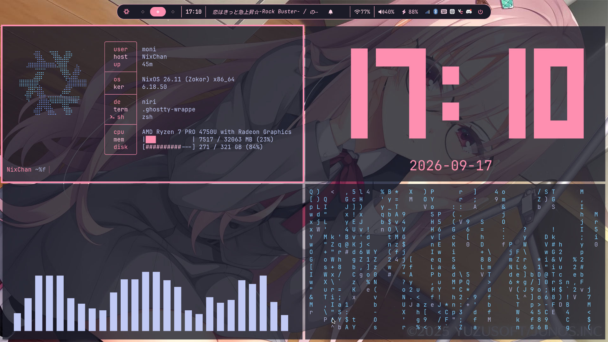
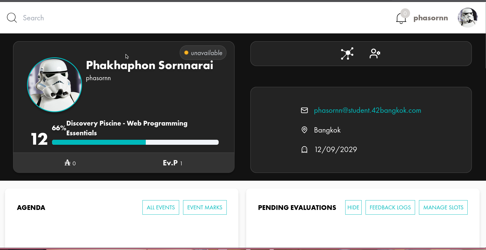

erogeDOTS
My personal dotfiles project for building and experimenting with my Unix desktop environment. It contains my NixOS, Niri, Wayland, shell, theming, and system configurations.
- NixOS
- Nix
- Niri
- Wayland
- Linux
- Dotfiles

ルートA · 直せないビジュアルノベルとUNIXオタク
第一章 · Chapter one
もにもに (MoniMoni) — IT student @ KMITL living between Visual Novel and the terminal
Diploma in CompEng → 2nd-year IT. Software tester, Linux geek 🐧, and visual novels to learn Japanese — 日本語勉強中。
Languages
Learning Go and Rust, also writes Python and Java. Forged in C/C++ at university.
QA & Tools
Software tester by trade — hunting bugs with Postman and Cypress. Neovim enjoyer.
OS & Shells
Daily driver is NixOS — declarative and reproducible. Also pokes at Arch and Kali.

第二章 · Chapter two
erogeDOTS
My personal dotfiles project for building and experimenting with my Unix desktop environment. It contains my NixOS, Niri, Wayland, shell, theming, and system configurations.

42 Discovery Piscine
A focused week of web development exercises covering semantic HTML, responsive CSS, JavaScript interactions, and collaboration.
最終章 · Final chapter · someone sent you a letter
Sealed with love · Route A
"You found the secret ending. Open it — no bad routes here, I promise."
Dear reader — thanks for playing my route this far. If you want to talk NixOS ricing, visual novels, or Golang, my DMs are the good ending. Pick a platform below.
最後まで読んでくれてありがとう！DM待ってるよ、グッドエンドで会おう。
— NunoiEnter